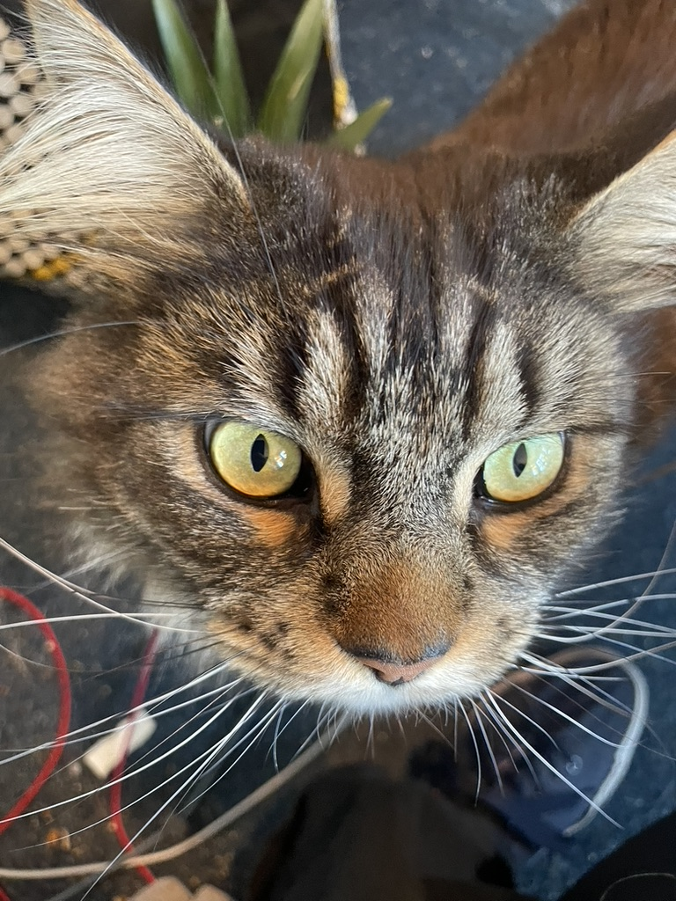
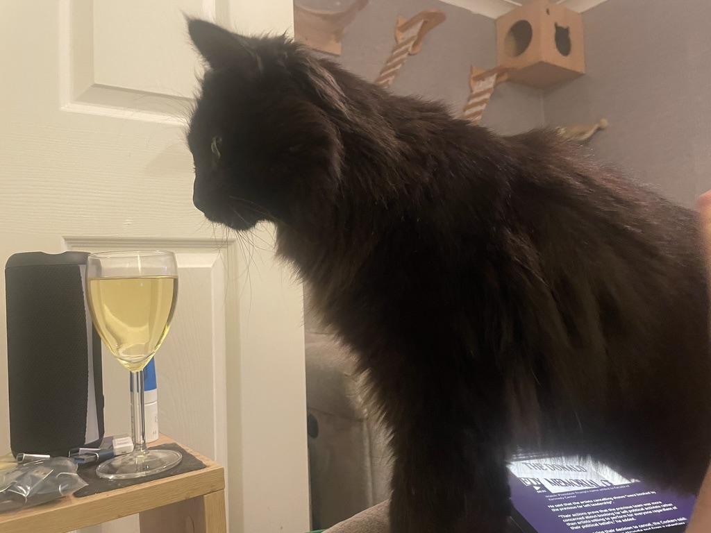
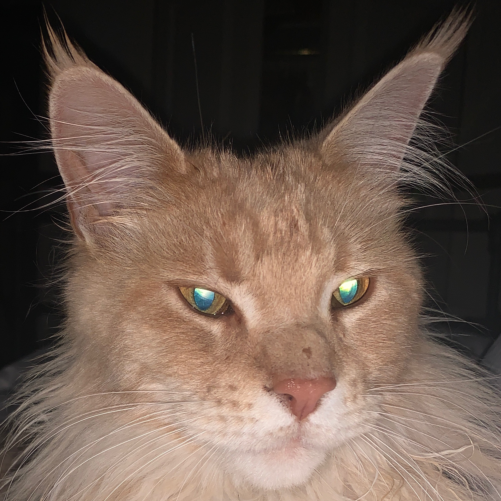
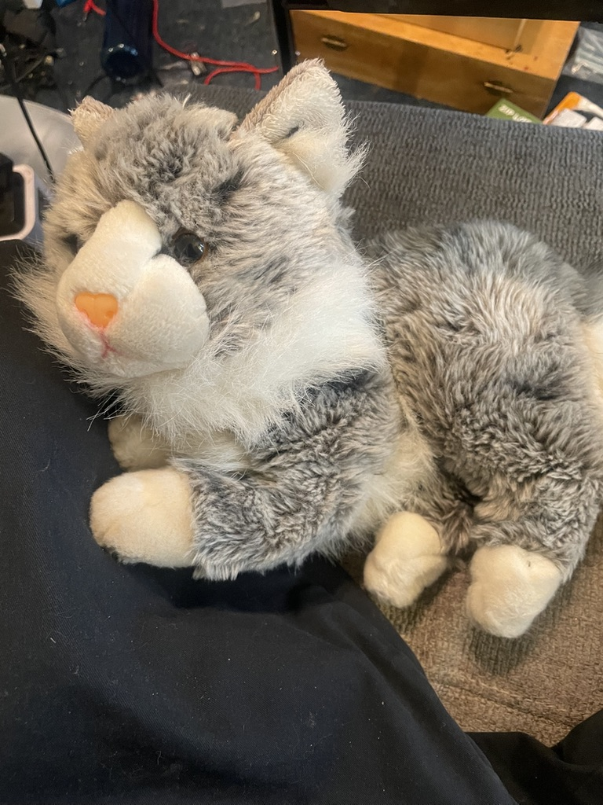

A ground-up walkthrough of the training pipeline — written for a software engineer who knows code but hasn't touched ML before.
Module 1
The Problem We're Solving
BootBoots is a cat-detection system built around an ESP32-S3 camera mounted in a kitchen. When the cat Boots is detected approaching a certain area, a water spray is triggered. Simple enough as a concept — but implementing it turns out to be surprisingly non-trivial, because "detect Boots" is the kind of problem that's trivially easy for a human brain and genuinely hard for traditional software.
Why not just write rules? You might imagine something like: "if the image contains a black blob of area 5,000–15,000 pixels, it's Boots." The trouble is that lighting changes, Boots moves, the image quality varies, and — critically — Boots is not the only black cat in this house. Chi and Kappa are also dark-coloured. A rules-based approach would require you to enumerate every possible variation, which quickly becomes intractable. This is the canonical reason machine learning exists: when the rules are too complex to write by hand, you let the computer discover them from examples instead.
The BootBoots model is trained to distinguish between seven classes: Boots, Chi, Tau, Kappa, Mu, Wolf, and NoCat. The first five are real cats; Wolf is a stuffed toy used for testing the spray mechanism without traumatising an actual cat; and NoCat covers any image where there's no cat present at all (empty floor, a human leg walking past, etc.).
At inference time, the seven-class output is used as a binary decision: if the top prediction is Boots, trigger the spray. Any other result — Chi, NoCat, Mu, Wolf, Tau, Kappa — means don't spray. The multiclass model is more capable than a pure binary Boots/NotBoots classifier because it must learn to genuinely distinguish Boots from other dark cats, rather than just learning "dark blob = Boots".
The cats you'll be meeting throughout this course:
No photo available (camera shy!)
Boots
Solid black, green eyes, inquisitive expression. The target.

Chi
Dark brown/black long-haired tabby. Father of Kappa.
Tau
Black and white tuxedo. Mother of Kappa. Loves radiators.

Kappa
Son of Chi and Tau. Very dark, long fluffy fur, big green eyes.

Mu
Fluffy ginger/cream. Very regal. Fond of flopping upside-down.

Wolf
Grey/white stuffed toy. Not a real cat. Used to test the spray safely.
Module 2
Supervised Learning
The branch of machine learning we're using is called supervised learning. The word "supervised" means we train the model using labelled examples — pairs of (input, correct_answer). The model sees an image and predicts a class; we compare that prediction to the correct label; and we use the difference to nudge the model's internal parameters slightly in the right direction. Repeat this process hundreds of thousands of times across thousands of images, and the parameters gradually settle into values that produce accurate predictions.
In BootBoots, the labels live in a DynamoDB table called catadata. Every time a new image is captured by the camera, a human (you) views it in a web UI and tags it: "that's Boots", "that's NoCat", "that's Kappa". That tag is written to DynamoDB with the image filename as the key. The images themselves sit in an S3 bucket. This separation is quite natural — DynamoDB for structured metadata, S3 for raw binary files.
A critical point for any software engineer encountering ML for the first time: the data is the product. You can swap out model architectures and tune hyperparameters all day, but if your training data is incorrectly labelled, too small, or unrepresentative of real-world conditions, nothing will save you. The quality and quantity of labelled examples is the single most important factor in a supervised learning system.
Here's the complete pipeline from raw camera image to a deployed model:
The complete BootBoots pipeline from camera capture to deployed model
The feedback loop that makes supervised learning work looks like this: the model makes a prediction, we calculate a loss (a number that quantifies how wrong the prediction was), and we use calculus (specifically, the gradient of the loss with respect to each parameter) to work out which way to nudge each parameter to reduce that loss. This is gradient descent — we'll cover it in detail in Module 10.
One key distinction: we have training data and validation data. The model learns from the training set; the validation set is a completely separate collection of images the model never trains on. We use the validation set to measure whether the model is actually generalising to new, unseen images, or merely memorising the training examples. This is the overfitting problem, and we'll cover it thoroughly in Module 4.
Module 3
Collecting Training Data
The script download_data_multiclass.py fetches all labelled images from AWS and organises them into a directory structure ready for training. Let's walk through the key parts.
Querying DynamoDB for labels
The first task is to find out which images have been labelled and what label they carry. DynamoDB is a NoSQL key-value store; our table catadata has rows keyed by image filename, with a cat attribute containing the label. The query uses a scan with a filter expression — not the most efficient DynamoDB operation (a full table scan), but appropriate here since we need all labelled records and the table is small enough that cost is negligible.
def scan_dynamo(client, table_name: str) -> list[dict]:
"""Fetch all records from catadata that have a cat label."""
records = []
kwargs: dict = {
"TableName": table_name,
"FilterExpression": "attribute_exists(cat)", # only labelled images
}
while True:
resp = client.scan(**kwargs)
for item in resp.get("Items", []):
image_name = item.get("imageName", {}).get("S")
cat = item.get("cat", {}).get("S")
if image_name and cat:
records.append({"imageName": image_name, "cat": cat})
last_key = resp.get("LastEvaluatedKey")
if not last_key:
break # no more pages
kwargs["ExclusiveStartKey"] = last_key
return records
download_data_multiclass.py — the DynamoDB scan loop, handling pagination
Notice the while True loop with a pagination check. DynamoDB returns results in pages (up to 1 MB per page); if LastEvaluatedKey is present in the response, there are more records to fetch. This pattern is standard DynamoDB pagination — you always need to handle it when scanning a large table.
Downloading from S3
Once we have the list of labelled filenames, we download each image from S3. Two interesting things happen here: first, there's a JPEG validation check; second, there's a header repair step.
JPEG_HEADER = bytes([0xFF, 0xD8, 0xFF])
JPEG_EOI = bytes([0xFF, 0xD9])
def download_image(s3_client, bucket: str, image_name: str, dest: Path) -> bool:
if dest.exists():
return True # already downloaded, skip
# ...fetch bytes from S3...
data: bytes = resp["Body"].read()
if data[:3] != JPEG_HEADER:
print(f" [skip] Not a JPEG: {key}")
return False
# Old images were sometimes truncated — missing the JPEG end-of-image marker
if data[-2:] != JPEG_EOI:
data = data + JPEG_EOI # patch it on the end
dest.write_bytes(data)
return True
download_data_multiclass.py — JPEG validation and repair
JPEG files have a defined binary structure: they always start with the magic bytes FF D8 FF and must end with an End-Of-Image marker FF D9. Early images captured by the BootBoots camera firmware had a bug that caused the FF D9 to be omitted. Rather than discarding these images, the script patches them by appending the missing bytes. This kind of pragmatic data repair is extremely common in real-world ML projects — you spend more time cleaning data than you'd expect.
The class imbalance problem
After scanning DynamoDB you might find something like: 2,300 NoCat images, 180 Boots images, 90 Chi images. If you trained on this raw distribution, the model would discover very quickly that "always predict NoCat" achieves roughly 60% accuracy with zero effort — because NoCat is so heavily over-represented. This is the class imbalance problem, and the download script addresses it upfront by capping NoCat:
if "NoCat" in by_class and len(by_class["NoCat"]) > args.max_nocat:
shuffled = by_class["NoCat"][:]
rng.shuffle(shuffled)
by_class["NoCat"] = shuffled[:args.max_nocat] # cap at 600 by default
download_data_multiclass.py — capping the dominant NoCat class before downloading
The default cap is 600 NoCat images. Combined with class weighting during training (Module 11), this keeps the model honest — it can't get away with lazily predicting the most common class.
Train / validation / manual_test split
The script splits each class independently into three buckets. Independent splitting per class is important: if you shuffled everything together and then split, you'd risk accidental imbalance where, say, all Tau images ended up in training and none in validation.
def split_class(records, manual_pct, val_split, seed) -> dict:
rng = random.Random(seed)
shuffled = records[:]
rng.shuffle(shuffled)
n_manual = max(1, round(len(shuffled) * manual_pct / 100))
manual = shuffled[:n_manual] # ~1% held back for human inspection
remaining = shuffled[n_manual:]
n_val = round(len(remaining) * val_split)
return {
"manual_test": manual, # ~1% — you eyeball these yourself
"validation": remaining[:n_val], # ~20% — held back from training
"training": remaining[n_val:], # ~79% — what the model learns from
}
The result is a directory tree that TensorFlow can load directly. The directory name is the label — a convention that TensorFlow's image_dataset_from_directory utility understands natively, and which we'll see in the training script.
Directory structure produced by download_data_multiclass.py
Module 4
Why Train / Validation / Test Splits?
Suppose you train a model on 1,000 images and then test it on the same 1,000 images. It gets 99% accuracy. Has it learned to recognise cats, or has it simply memorised 1,000 image files? You can't tell. This is the core problem that the data split solves: by holding back a portion of the data that the model never trains on, you get an honest estimate of how well it will perform on new, previously unseen images.
Think of it like a school exam. A student who is given the exam questions in advance can score 100% without understanding the material. The only meaningful test is one the student hasn't seen before. The validation set is that unseen exam.
Overfitting is the failure mode where a model performs well on training data but poorly on validation data. It happens when the model is complex enough to memorise the training set rather than learning the underlying patterns. A model that has overfit will show excellent training accuracy (say, 98%) but poor validation accuracy (say, 65%). The diagram below illustrates this:
Overfitting: training accuracy keeps climbing; validation accuracy peaks and then falls. We should stop at the green line.
BootBoots uses three splits: training (~79%), validation (~20%), and manual_test (~1%). The manual_test set isn't used by any automated process — it's a small selection of images you can personally eyeball to sanity-check the model's predictions after training. It's the human equivalent of a spot check.
The seed parameter (default: 42) passed to the random shuffle ensures the split is reproducible. If you re-run the download script, the same images will end up in the same splits. This matters for scientific reproducibility: you want to be able to compare two different training runs knowing they used identical data splits.
Module 5
Data Augmentation
Even with a few hundred images per class, that's a small dataset by ML standards. A model trained on exactly these images might learn to recognise Boots under the specific lighting conditions and camera angle present in the training photos — but fail when the kitchen light is off, or when Boots is at a slightly different angle. Data augmentation is the technique of artificially expanding the training set by applying random transformations to existing images, so the model sees many variations of each example.
Crucially, augmentation is applied only to the training set, never to validation or test data. The validation set should be as close as possible to what the model will see in real production — unmodified images. Augmenting validation data would give you an artificially inflated accuracy score that doesn't reflect real-world performance.
Here is the augmentation pipeline used in BootBoots, with the reasoning behind each transform:
def make_augmentation_layer() -> tf.keras.Sequential:
return tf.keras.Sequential([
layers.RandomFlip("horizontal"), # cats on a floor — no vertical flips
layers.RandomRotation(0.15), # fixed camera, so modest rotation only
layers.RandomZoom((-0.3, 0.0)), # zoom in up to 30% — crop-style
layers.RandomContrast(0.2), # kitchen lighting varies by time of day
layers.RandomBrightness(0.2), # same reason
], name="augmentation")
train_multiclass.py — augmentation pipeline. Applied randomly each time an image is loaded during training.
RandomFlip("horizontal"): mirrors the image left-to-right. A cat facing left is still a cat. Note: only horizontal flipping — not vertical. A cat on the ceiling is not a real training scenario and would add noise. RandomRotation(0.15): rotates up to ±15% of a full rotation (about ±54°). The camera is fixed, so you wouldn't expect dramatic rotation, but this handles minor camera mounting imperfections. RandomZoom((-0.3, 0.0)): zooms in (crops) by up to 30%. This simulates cats being at different distances from the camera — close-up faces versus full-body shots. The range is (-0.3, 0.0), meaning "zoom in" only (negative = zoom in, positive = zoom out with padding). RandomContrast and RandomBrightness (0.2): varies contrast and brightness by ±20%. The kitchen has different lighting at 7am versus 7pm, artificial light versus natural light.
Notice that the augmentation layer is built as a tf.keras.Sequential but is applied in the data pipeline, not inside the model itself. The comment in the code explains why: applying augmentation in the pipeline means it runs on the CPU while the GPU is processing the previous batch. This keeps both CPU and GPU busy simultaneously — a free performance optimisation. It also avoids a Keras 3 serialisation bug with random seed generators inside models.
Each training image is randomly transformed every epoch — the model never sees exactly the same version twice
Module 6
What Is a Neural Network?
A neural network is, at its core, a mathematical function — one that takes numbers as input and produces numbers as output. In our case, the input is a 240×240 RGB image (which is 240 × 240 × 3 = 172,800 numbers between 0 and 255), and the output is seven numbers representing the probability that the image belongs to each of our seven classes.
The function is composed of layers. Think of each layer as a transformation step: it takes the output of the previous layer, applies a mathematical operation, and passes its results to the next layer. The power of neural networks comes from learnable parameters — the numerical constants inside those transformations (called weights and biases) that are adjusted during training to make the function produce the right answers.
EfficientNetV2B1, the backbone we use, has approximately 6.8 million parameters. That is 6.8 million numerical knobs that the training process adjusts to make the model accurate. Our custom head adds a few thousand more. You don't manually set any of these — gradient descent finds them automatically.
For image classification, there are two main types of layer worth understanding:
Convolutional layers are the key innovation that makes neural networks work well on images. A convolution applies a small filter (typically 3×3 pixels) across every position in an image and produces a feature map — essentially an image that highlights wherever that filter's pattern appears. The first convolutional layers detect simple things: horizontal edges, vertical edges, colour gradients. Deeper layers combine those to detect more complex things: curves, corners, textures. Even deeper: shapes. Even deeper: "that looks like a cat ear." The model learns what filters to use — you don't design them.
Dense layers (also called fully-connected layers) connect every input neuron to every output neuron. They're what you probably imagine when you think of a neural network: a grid of numbers multiplied together. Dense layers appear at the top of the network (our custom "head") where we need to combine all the high-level features and make a final decision about the class.
Information flows left to right. Early layers detect simple features; deep layers detect complex ones. Our custom head sits after the pooling layer.
Activation functions are worth a brief mention. After each layer's matrix multiplication, an activation function is applied to each output value. Without this, a stack of layers would just be a single giant matrix multiplication (which is no more powerful than one layer). The activation function introduces non-linearity, which is what allows deep networks to learn complex patterns. EfficientNetV2 uses the SiLU function internally; our output layer uses softmax, which we'll explain in Module 9.
Module 7
Transfer Learning
Training a deep convolutional neural network from scratch requires millions of labelled images and weeks of GPU time. We have a few thousand images and a laptop. Transfer learning is the solution: we start with a model that has already been trained on a massive, general-purpose dataset, and we fine-tune the final layers for our specific problem.
The pre-trained model we use is EfficientNetV2B1, trained on ImageNet — a dataset of 1.2 million images spanning 1,000 categories (dogs, cars, furniture, animals, etc.). After training on ImageNet, the model's convolutional layers have learned a rich vocabulary of visual features that is broadly applicable to any image recognition task. It knows what fur looks like, what eyes look like, what edges and curves mean. We're borrowing that knowledge for free.
Analogy
Think of it like hiring a senior engineer who's worked across many different companies and tech stacks. They arrive with deep, transferable knowledge — how to reason about systems, debug effectively, read unfamiliar code. You don't need to teach them to code from scratch; you just need to onboard them to your codebase and your specific problems. That's transfer learning: the transferred knowledge (visual feature detection) is already there; we only need to teach the model the company-specific part (which of these cats is Boots).
The key parameters in build_model() that implement transfer learning are:
base_model = EfficientNetV2B1(include_top=False, weights="imagenet") — this downloads the pre-trained weights and discards only the original classification head (the include_top=False means "give me the convolutional body, not the final Dense+softmax layer"). base_model.trainable = train_base — this is the crucial line. When train_base=False (the default), all the EfficientNetV2B1 layers are frozen: their weights will not be updated during training. Only the new head we add on top will be trained.
When you run with --train-base, the base model's weights are also updated — a process called fine-tuning. This is slower and requires more care (you typically use a lower learning rate to avoid overwriting the pre-trained knowledge), but can squeeze out a few extra percentage points of accuracy on specialised tasks.
The frozen base provides pre-learned visual features; only our small custom head is trained from scratch
Why does this work? The intuition is that the visual features learned from ImageNet (edges, textures, shapes) are directly applicable to cat recognition — cats are physical objects with the same kind of visual structure as the 1,000 ImageNet classes. The final layer of the frozen base produces a 1,280-dimensional feature vector representing "what's in this image" in abstract terms. Our custom head takes that vector and learns to map it to our 7 classes. We're training only those final mappings — a much smaller learning problem than training the whole network.
In practice, this means we can achieve good results with relatively few training images and short training times. The reported validation accuracy on BootBoots is 90.97% — very respectable for a 7-class problem trained on a few hundred images per class.
Module 8
Building the Model
Let's walk through build_model() line by line. This function constructs the entire neural network: the pre-trained backbone, the custom classification head, and the compilation settings.
IMG_SIZE = (240, 240) # EfficientNetV2B1 native resolution
def build_model(num_classes: int, dropout_rate: float, l2_reg: float,
learning_rate: float, train_base: bool) -> tf.keras.Model:
regularizer = tf.keras.regularizers.l2(l2_reg) # L2 weight penalty (see Module 13)
# Load EfficientNetV2B1 pre-trained on ImageNet.
# include_top=False: discard the original 1000-class output layer.
# We get back the convolutional body only.
base_model = EfficientNetV2B1(
input_shape=IMG_SIZE + (3,), # 240 × 240 × 3 (RGB)
include_top=False,
weights="imagenet"
)
base_model.trainable = train_base # False = frozen (default)
The input_shape is a tuple: (240, 240, 3). The 3 means three colour channels (Red, Green, Blue). If we were working with greyscale images it would be 1. The expression IMG_SIZE + (3,) is just a Pythonic way to concatenate the tuples: (240, 240) + (3,) = (240, 240, 3).
# Build the model using the Functional API (not Sequential).
# This lets us define the data flow explicitly.
inputs = tf.keras.Input(shape=IMG_SIZE + (3,))
# EfficientNetV2 expects slightly pre-processed pixel values.
# preprocess_input() rescales [0, 255] to the range the model was trained on.
x = tf.keras.applications.efficientnet_v2.preprocess_input(inputs)
# Pass through the frozen base. training=False tells BatchNorm layers
# inside the base to use their stored statistics rather than computing
# new ones from this batch (important when base is frozen).
x = base_model(x, training=False)
# Collapse spatial dimensions: from (batch, h, w, channels) → (batch, channels)
# Each feature map becomes its average value — a single summary number.
x = layers.GlobalAveragePooling2D()(x)
# Randomly zero out 30% of activations during training.
# Forces the network to not over-rely on any single feature.
x = layers.Dropout(dropout_rate)(x)
# Final classification layer: 7 outputs, one per class.
# softmax ensures they sum to 1 (interpretable as probabilities).
outputs = layers.Dense(num_classes, activation="softmax",
kernel_regularizer=regularizer)(x)
model = tf.keras.Model(inputs, outputs)
train_multiclass.py — the model architecture, annotated
GlobalAveragePooling2D deserves special attention. After the convolutional base, you have a 3D tensor of shape (height, width, channels) — think of it as a stack of feature maps, each one a 2D image highlighting where a particular feature was detected. We need to convert this to a simple 1D vector to feed into a Dense layer. GlobalAveragePooling2D does this by computing the average value of each feature map — collapsing the spatial dimensions entirely. The result is a vector of length equal to the number of channels (1,280 for EfficientNetV2B1). This vector represents "how much of each learned feature is present in the image".
Dropout is a regularisation technique (Module 13 covers regularisation in depth). During training, each call to the Dropout layer randomly sets 30% of its inputs to zero. This sounds destructive, but it forces the network to learn redundant representations — no single neuron can become too critical to the prediction. At inference time (training=False), Dropout is a no-op: all neurons are active and the outputs are scaled accordingly.
# Compile the model: choose the optimiser, loss function, and metrics
model.compile(
optimizer=optimizers.Adam(learning_rate=learning_rate),
loss="categorical_crossentropy", # standard choice for multi-class problems
metrics=["accuracy"],
)
return model
train_multiclass.py — model compilation. The loss function and optimiser are defined here.
The compile() call doesn't do any computation — it just records the configuration. Nothing is trained yet. It's equivalent to configuring a build pipeline: you're specifying how to train, not actually running it. The actual training happens when you call model.fit() (Module 12).
Module 9
Loss Functions — How We Measure "How Wrong"
To train a model, we need a number that measures how badly it's performing. That number is the loss (sometimes called the cost or error). The training process's entire job is to make this number smaller. The loss function we use is categorical cross-entropy.
First, let's understand softmax. The final Dense layer produces 7 raw numbers — one per class. These could be anything: 2.3, -0.5, 0.1, etc. The softmax activation converts these raw scores into a proper probability distribution: all values become positive and they sum to exactly 1. So the model output might look like:
Boots: 0.87 Chi: 0.04 Tau: 0.02 Kappa: 0.03 Mu: 0.01 Wolf: 0.01 NoCat: 0.02 sum = 1.00 → interpretable as "87% confidence this is Boots"
Cross-entropy loss asks: how surprised is the model? Mathematically, it is the negative log probability assigned to the correct class. If the model assigns 87% probability to the correct class (Boots), the loss is -log(0.87) ≈ 0.14. If the model is badly wrong and assigns only 5% probability to the correct class, the loss is -log(0.05) ≈ 3.0. The logarithm is key here: it makes the model pay increasingly severe penalties for high-confidence wrong predictions. Being 99% confident and wrong is catastrophically worse than being 55% confident and wrong.
Cross-entropy loss: the more confident the model is about the wrong answer, the higher the penalty
The term "categorical" in categorical cross-entropy simply means "multi-class" — as opposed to binary cross-entropy (used when there are only two classes). Categorical cross-entropy expects the labels to be one-hot encoded vectors, which Keras handles automatically when you use label_mode="categorical" in image_dataset_from_directory(). For example, the label "Boots" (class index 0) becomes the vector [1, 0, 0, 0, 0, 0, 0].
The metric reported during training is accuracy — simply the fraction of predictions where the highest probability class matched the true label. Loss is what we optimise; accuracy is what we care about in practice. They're related but not identical. You can have a model where loss is still decreasing but accuracy has plateaued, or vice versa.
Module 10
The Optimiser and Learning Rate
We have a loss function (how wrong is the model?). Now we need a way to reduce that loss by adjusting the model's parameters. The algorithm that does this is called the optimiser. BootBoots uses Adam, which is the de facto standard for most deep learning tasks.
The fundamental idea behind optimisation is gradient descent. Imagine the loss as a landscape of hills and valleys — each point in the landscape corresponds to a particular setting of all 6.8 million parameters, and the height at that point is the loss value. We want to find the valley (the minimum). Gradient descent finds the direction of steepest downhill slope (the gradient) and takes a small step in that direction. Repeat thousands of times, and you roll down into a valley.
Calculating the gradient requires calculus — specifically, the derivative of the loss with respect to every single parameter. This is done by backpropagation, an algorithm that applies the chain rule through each layer of the network in reverse order. Keras/TensorFlow handles all of this automatically via its automatic differentiation engine (tf.GradientTape). As the programmer, you never write a derivative by hand.
The learning rate controls how large a step to take in the gradient direction. Too large: the step overshoots the valley and the loss bounces around or diverges. Too small: training takes a very long time and may get stuck in a shallow valley. The default in BootBoots is 0.0001 (1e-4).
The loss landscape: gradient descent rolls downhill. Learning rate controls step size.
Adam (Adaptive Moment Estimation) improves on vanilla gradient descent by adapting the learning rate separately for each parameter. Parameters that have been changing a lot get a smaller effective learning rate (they're already in a good region); parameters that have barely moved get a larger effective push. It also uses momentum — a memory of recent gradient directions — to smooth out noisy gradients and accelerate descent in consistent directions. Adam converges faster than vanilla gradient descent on almost all tasks, which is why it's the default choice.
The Learning Rate Finder
Rather than guessing the learning rate, the script includes a tool to find a good one empirically. Run with --find-lr:
def find_lr(model, train_ds, min_lr=1e-6, max_lr=1e-1, steps=100):
"""
Train for `steps` batches, increasing LR exponentially from min to max.
The LR at which loss is falling fastest is a good starting point.
"""
factor = (max_lr / min_lr) ** (1 / steps) # multiplicative step per batch
lr = min_lr
for step, (x_batch, y_batch) in enumerate(train_ds.take(steps)):
model.optimizer.learning_rate = lr # override LR for this batch
loss = model.train_on_batch(x_batch, y_batch)
lrs.append(lr)
losses.append(loss)
lr *= factor # increase LR for next batch
# Find steepest descent in the smoothed loss curve
gradients = np.diff(smoothed)
best_idx = int(np.argmin(gradients)) # where is the drop sharpest?
suggested_lr = smoothed_lrs[best_idx]
print(f"Suggested LR: {suggested_lr:.2e}")
train_multiclass.py — LR range test. The script also saves a plot to lr_finder.png.
The idea: sweep the learning rate from very small to very large over 100 training batches and record the loss at each step. The loss initially decreases (LR is in a useful range), then at some point the loss starts increasing again (LR is too large, overshooting). The optimal learning rate is the one at which the loss was falling most steeply — typically about 10× smaller than the value where loss starts to diverge. This technique is called the LR range test and is widely used in practice before committing to a full training run.
Practical tip
Always run --find-lr before your first full training run on a new dataset. It takes under a minute and can save you from wasting 30 minutes training with a suboptimal learning rate. The suggested value is a ceiling — use --lr set to 3–10× lower than the suggested value for safe convergence.
Module 11
Class Weights — Handling Imbalance
Even after capping NoCat at 600 images, the class distribution is uneven. Boots might have 180 images while Kappa has only 60. If we train naively, the model will implicitly optimise more heavily for common classes: every correct Boots prediction contributes to many more gradient updates than a correct Kappa prediction simply because Boots appears more often in the data.
Class weighting compensates for this by multiplying the loss for each example by a weight inversely proportional to the class frequency. Samples from rare classes contribute more to the gradient update; samples from common classes contribute less. The formula used is:
A class with 200 images: weight = 1000 / (7 × 200) ≈ 0.71 Average weight ≈ 1.0 — the formula is self-normalising
# Count images per class in the training directory
class_counts = {name: sum(1 for _ in (train_dir / name).iterdir())
for name in class_names}
total = sum(class_counts.values())
# Build the weight dict: {class_index: weight}
class_weight = {
i: total / (num_classes * count)
for i, (_, count) in enumerate(class_counts.items())
}
# Passed to model.fit() — Keras multiplies each sample's loss by its weight
history = model.fit(
train_ds,
class_weight=class_weight, # ← here
...
)
train_multiclass.py — class weight computation and application
Notice that this is done entirely in Python before training starts — it's just a dictionary passed to model.fit(). Keras handles the weighting internally during the loss computation. The effect is that misclassifying a rare-class image incurs a larger penalty than misclassifying a common-class image, which drives the model to pay proportionally more attention to minority classes.
Module 12
The Training Loop
Training is the process of repeatedly feeding images through the network, computing the loss, and updating the parameters. Understanding the three levels of iteration helps make sense of training output:
1
Batch: A group of 16 images processed together. Gradient is computed over the whole batch before updating weights. Batching is more efficient than processing one image at a time and produces a more stable gradient estimate (less noisy).
2
Epoch: One full pass through all training images. If you have 640 training images and a batch size of 16, one epoch = 640/16 = 40 steps (batches). After each epoch, Keras evaluates the model on the validation set and reports validation accuracy.
3
Training run: All epochs together, up to the configured maximum (50) or until early stopping fires.
# Load images from directories — TF infers class names from folder names
train_ds = tf.keras.utils.image_dataset_from_directory(
train_dir,
image_size=IMG_SIZE, # resize every image to 240×240
batch_size=args.batch_size, # 16 images per batch
label_mode="categorical", # one-hot encode labels e.g. Boots → [1,0,0,0,0,0,0]
shuffle=True,
seed=42,
)
val_ds = tf.keras.utils.image_dataset_from_directory(
val_dir,
image_size=IMG_SIZE,
batch_size=args.batch_size,
label_mode="categorical",
shuffle=False, # no shuffling for validation — order doesn't matter
)
# Apply augmentation only to training data (pipeline-level, runs on CPU)
augmented = lambda x, y: (augment(x, training=True), y)
train_ds = train_ds.map(augmented, num_parallel_calls=AUTOTUNE).cache().prefetch(AUTOTUNE)
val_ds = val_ds.cache().prefetch(AUTOTUNE) # no augmentation on val!
train_multiclass.py — dataset preparation. AUTOTUNE lets TF decide how many parallel threads to use.
The .cache() call stores the (post-augmentation) dataset in memory after the first epoch. This means disk I/O only happens once. The .prefetch(AUTOTUNE) tells TensorFlow to prepare the next batch while the GPU is processing the current one — keeping the GPU fully occupied. These two optimisations can make training 2–5× faster on typical hardware.
The actual training is a single function call:
history = model.fit(
train_ds,
validation_data=val_ds,
epochs=args.epochs, # max 50 epochs
callbacks=cb_list, # EarlyStopping + ModelCheckpoint
class_weight=class_weight,
)
train_multiclass.py — model.fit(): one call to start the entire training process
The history object returned by fit() contains lists of loss and accuracy values for each epoch — both training and validation. You can plot these to visualise how training progressed (the overfitting curves from Module 4 come from exactly this data).
Callbacks
Callbacks are functions that Keras calls at specific points in the training loop. BootBoots uses two:
EarlyStopping monitors validation accuracy after each epoch. If it hasn't improved by at least 0.001 (0.1%) for 10 consecutive epochs (patience=10), training stops automatically and the best weights are restored (restore_best_weights=True). This prevents wasting compute time on epochs that aren't helping, and — crucially — prevents overfitting from running unchecked. The patience parameter is important: too low (e.g. 3) and you might stop prematurely during a temporary plateau; too high (e.g. 30) and you waste time after the model has already converged.
ModelCheckpoint saves the model to disk whenever validation accuracy improves. Without this, if training crashes at epoch 40, you'd lose everything. With it, the best model seen so far is always on disk at models_multiclass/best_model.keras. The save_best_only=True parameter means only better-than-previous-best models overwrite the file — so you never accidentally save a worse model.
callbacks.EarlyStopping(
monitor="val_accuracy", # watch this metric
patience=10, # stop after 10 epochs with no improvement
min_delta=0.001, # ignore improvements smaller than 0.1%
restore_best_weights=True, # revert to best-seen weights when stopping
)
callbacks.ModelCheckpoint(
"models_multiclass/best_model.keras",
monitor="val_accuracy",
save_best_only=True, # only overwrite if we're better than before
)
train_multiclass.py — callback configuration
Here's an example of what training output looks like. Each line is one epoch:
Epoch 1/50
40/40 ━━━━━━━━━━━━━━━━━━━━ 18s — loss: 1.8923 — accuracy: 0.3241 — val_loss: 1.6102 — val_accuracy: 0.4108
Epoch 2/50
40/40 ━━━━━━━━━━━━━━━━━━━━ 14s — loss: 1.4201 — accuracy: 0.5387 — val_loss: 1.2654 — val_accuracy: 0.6219
...
Epoch 23/50
40/40 ━━━━━━━━━━━━━━━━━━━━ 14s — loss: 0.4123 — accuracy: 0.8912 — val_loss: 0.4098 — val_accuracy: 0.9097
Restoring model weights from the end of the best epoch: 23.
EarlyStopping: stopping training. Best val_accuracy: 0.9097 at epoch 23.
Example training output — training and validation accuracy/loss reported per epoch
Module 13
Regularisation — Fighting Overfitting
Overfitting (covered in Module 4) is the most common failure mode in supervised learning with small datasets. BootBoots uses three complementary techniques to fight it: L2 regularisation, Dropout, and Early Stopping.
L2 Regularisation (also called weight decay) adds a penalty term to the loss function proportional to the sum of squared weight values. The effect: the optimiser is simultaneously trying to minimise prediction error and keep the weights small. Large weights are the mathematical signature of overfitting — they represent the model memorising specific training examples rather than learning generalisable patterns. With L2 regularisation, the model is discouraged from growing any individual weight too large.
total_loss = cross_entropy_loss + λ × Σ(w²)
λ (lambda) is the L2 weight — 0.0001 in BootBoots Σ(w²) = sum of squares of all weights in the Dense layer Small λ = gentle penalty. Large λ = strong penalty (underfitting risk)
L2 is applied via kernel_regularizer=tf.keras.regularizers.l2(0.0001) on the Dense layer. Note it's applied only to the kernel (weight matrix), not the biases — regularising biases doesn't help and is rarely done.
Dropout was covered in Module 8 during the model build walkthrough. As a regulariser, the intuition is: by randomly disabling 30% of neurons each training step, you prevent any neuron from becoming a "star player" that the rest of the network depends on. The network has to learn redundant representations, which are inherently more generalisable. At inference time all neurons are active and their outputs are scaled by (1 - dropout_rate) to compensate for the fact that they were randomly zeroed during training.
Early Stopping is the bluntest instrument: it simply stops training when validation performance stops improving. It doesn't change the model architecture or the loss function — it just halts the process before overfitting takes hold. The restore_best_weights=True setting ensures that when we stop, we revert to the model checkpoint from the epoch where validation accuracy peaked, not the most recent (possibly overfit) weights.
These three techniques are complementary and reinforce each other. L2 discourages large weights structurally; Dropout forces redundancy; Early Stopping provides a safety net if both fail to prevent overfitting completely. Using all three together is standard practice in production ML systems.
Module 14
Export and Deployment
After training, the model is saved as best_model.keras — Keras's native format, a zip archive containing the model architecture and weights. This format is convenient for local development (loading with tf.keras.models.load_model()) but isn't suitable for serving in production via AWS SageMaker.
SageMaker hosts the model using TensorFlow Serving, a production-grade model serving system that loads models in SavedModel format — a directory containing a compiled TensorFlow graph (saved_model.pb) and the weight files. The script export_for_sagemaker.py converts the Keras file to this format and packages it as model.tar.gz.
There's a subtle Keras 3 compatibility issue that required a two-step export process, and it's worth understanding because it illustrates how serialisation formats can differ between framework versions:
# Step 1: export via Keras — this correctly handles Keras 3's variable system
model.export(str(intermediate_path))
# Output: a "Keras SavedModel" with Keras-specific variable tracking
# Step 2: reload as a plain TF module — variables are now ordinary tf.Variables
loaded = tf.saved_model.load(str(intermediate_path))
# At this point, the model's weights are standard TF variables that
# tf.saved_model.save() can traverse and serialise correctly.
# Step 3: define a JPEG-decoding serving function
@tf.function(input_signature=[
tf.TensorSpec(shape=[None], dtype=tf.string, name="image_bytes")
])
def serve_jpeg(image_bytes):
def decode_one(img_bytes):
img = tf.image.decode_jpeg(img_bytes, channels=3) # raw JPEG → RGB array
img = tf.image.resize(img, IMG_SIZE) # resize to 240×240
return tf.cast(img, tf.float32) # ensure float
images = tf.map_fn(decode_one, image_bytes, fn_output_signature=tf.float32)
result = loaded.serve(images)
return {"probabilities": result}
# Step 4: save with the JPEG-decoding serving signature
tf.saved_model.save(loaded, str(saved_model_path),
signatures={"serving_default": serve_jpeg})
export_for_sagemaker.py — the two-step export with JPEG-decoding serving signature
The serving signature is the contract between the model and TF Serving. It defines: what input format to accept, and what output format to return. In production, the Lambda function sends raw JPEG bytes to the endpoint. The serving function decodes those bytes, resizes the image, runs inference, and returns probabilities. This means the Lambda doesn't need to know about image preprocessing — it just POSTs bytes and reads back probabilities.
The export script also validates that the model's class names match the hardcoded CAT_NAMES list in the Lambda function. This is a guard against a common deployment pitfall: training a new model with a different class ordering and deploying it without updating the Lambda, which would cause the wrong cat names to be assigned to the right probabilities.
Contents of model.tar.gz — uploaded to S3 and deployed to SageMaker
The 1/ directory is TF Serving's convention for model versioning: the integer directory name is the version number. When a new model is deployed, you'd use 2/, and TF Serving can serve both versions simultaneously during a rollout, switching traffic gradually.
Module 15
The Complete Picture
Here is the complete data and model lifecycle — from a cat sitting in front of the camera to a trained model correctly identifying it:
The complete BootBoots lifecycle — offline training above, online inference below
What does 90.97% accuracy actually mean? On the held-out validation set — images the model has never seen during training — 9 in every 10 predictions are correct. More importantly, for the operational use case (spray Boots, don't spray anything else), the relevant measure is precision on the Boots class: of all the times the model predicted Boots, how often was it actually Boots? A false positive (spraying Chi) is worse than a false negative (missing Boots) because you want the system to be trustworthy, not trigger-happy.
What the model doesn't know: It has no concept of time, no memory between frames, no knowledge of where the cats usually sit, and no awareness of whether it's night or day. It simply looks at a 240×240 image and returns a probability distribution. All the context and logic lives in the surrounding system (Lambda, IoT rules, spray timing logic). This is the correct architectural boundary: the ML model does one thing well, and the application logic decides what to do with the result.
Continuing to improve the model: The cycle is simple — label more images, re-download, retrain. Each new round of labelling adds to the DynamoDB table, and the download script picks them up automatically. The most impactful thing you can do is label images that the current model gets wrong (hard cases, unusual lighting, Boots at an angle). This technique — selectively labelling the model's failure modes — is called active learning, and it's far more efficient than randomly labelling new images.
You now have a complete picture of the BootBoots training pipeline, from raw camera images to a deployed SageMaker endpoint. The same pattern — supervised learning, transfer learning, careful data management, augmentation, regularisation — is used by the vast majority of production image classification systems. The scale differs; the principles don't.
Quick reference: key files
local-training/download_data_multiclass.py — fetch labelled images from AWS, split into train/val/test
local-training/train_multiclass.py — build, train, and checkpoint the model
local-training/predict.py — run inference on local images after training
local-training/export_for_sagemaker.py — convert .keras → model.tar.gz for deployment
local-training/serve.py — local Flask server for testing with the sandbox web app